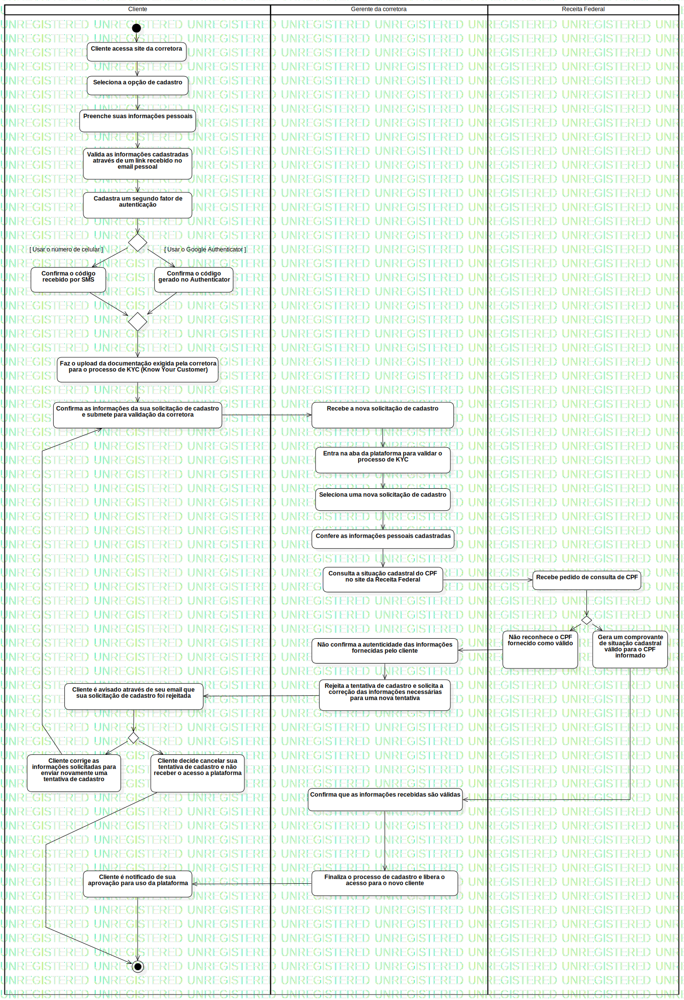

Activity1
UMLActivity
Untitled
::
Model
::
Cadastro
::
Activity1
Description
none
Diagrams

ActivityDiagramCadastro
Groups
Cliente
Gerente da corretora
ActivityPartition3
Receita Federal
Nodes
InitialNode1
Cliente acessa site da corretora
Seleciona a opção de cadastro
Preenche suas informações pessoais
Cadastra um segundo fator de autenticação
ForkNode1
Confirma o código gerado no Authenticator
Faz o upload da documentação exigida pela corretora para o processo de KYC (Know Your Customer)
Confirma as informações da sua solicitação de cadastro e submete para validação da corretora
Recebe pedido de consulta de CPF
ForkNode2
ActivityFinalNode1
Edges
(InitialNode1→Cliente acessa site da corretora)
(Cliente acessa site da corretora→Seleciona a opção de cadastro)
(Seleciona a opção de cadastro→Preenche suas informações pessoais)
(Preenche suas informações pessoais→Valida as informações cadastradas através de um link recebido no email pessoal)
(Valida as informações cadastradas através de um link recebido no email pessoal→Cadastra um segundo fator de autenticação)
(Cadastra um segundo fator de autenticação→DecisionNode1)
(DecisionNode1→Confirma o código recebido por SMS)
(DecisionNode1→Confirma o código gerado no Authenticator)
(Confirma o código recebido por SMS→MergeNode1)
(Confirma o código gerado no Authenticator→MergeNode1)
(MergeNode1→Faz o upload da documentação exigida pela corretora para o processo de KYC (Know Your Customer))
(Faz o upload da documentação exigida pela corretora para o processo de KYC (Know Your Customer)→Confirma as informações da sua solicitação de cadastro e submete para validação da corretora)
(Confirma as informações da sua solicitação de cadastro e submete para validação da corretora→Recebe a nova solicitação de cadastro)
(Recebe a nova solicitação de cadastro→Entra na aba da plataforma para validar o processo de KYC)
(Entra na aba da plataforma para validar o processo de KYC→Seleciona uma nova solicitação de cadastro)
(Seleciona uma nova solicitação de cadastro→Confere as informações pessoais cadastradas)
(Confere as informações pessoais cadastradas→Consulta a situação cadastral do CPF no site da Receita Federal)
(Consulta a situação cadastral do CPF no site da Receita Federal→Recebe pedido de consulta de CPF)
(Recebe pedido de consulta de CPF→DecisionNode1)
(DecisionNode1→Gera um comprovante de situação cadastral válido para o CPF informado)
(DecisionNode1→Não reconhece o CPF fornecido como válido)
(Gera um comprovante de situação cadastral válido para o CPF informado→Confirma que as informações recebidas são válidas)
(Confirma que as informações recebidas são válidas→Finaliza o processo de cadastro e libera o acesso para o novo cliente)
(Finaliza o processo de cadastro e libera o acesso para o novo cliente→Cliente é notificado de sua aprovação para uso da plataforma)
(Cliente é notificado de sua aprovação para uso da plataforma→ActivityFinalNode1)
(Não reconhece o CPF fornecido como válido→Não confirma a autenticidade das informações fornecidas pelo cliente)
(Não confirma a autenticidade das informações fornecidas pelo cliente→Rejeita a tentativa de cadastro e solicita a correção das informações necessárias para uma nova tentativa)
(Rejeita a tentativa de cadastro e solicita a correção das informações necessárias para uma nova tentativa→Cliente é avisado através de seu email que sua solicitação de cadastro foi rejeitada)
(Cliente é avisado através de seu email que sua solicitação de cadastro foi rejeitada→DecisionNode1)
(DecisionNode1→Cliente corrige as informações solicitadas para enviar novamente uma tentativa de cadastro)
(DecisionNode1→Cliente decide cancelar sua tentativa de cadastro e não receber o acesso a plataforma)
(Cliente corrige as informações solicitadas para enviar novamente uma tentativa de cadastro→Confirma as informações da sua solicitação de cadastro e submete para validação da corretora)
(Cliente decide cancelar sua tentativa de cadastro e não receber o acesso a plataforma→ActivityFinalNode1)
Properties
Name
Value
name
Activity1
stereotype
null
visibility
public
isReentrant
true
isReadOnly
false
isSingleExecution
false
Owned Elements
ActivityDiagramCadastro